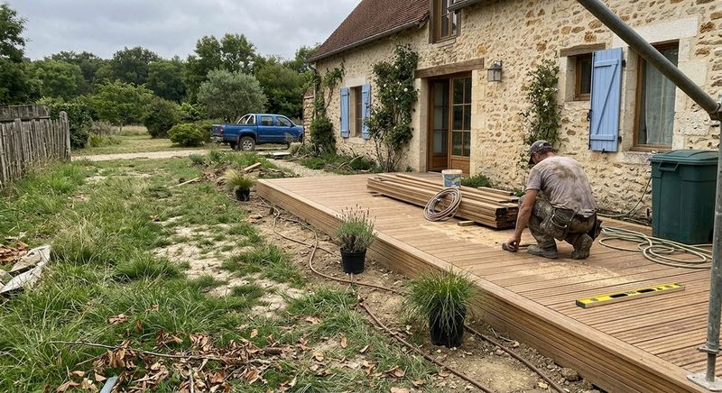
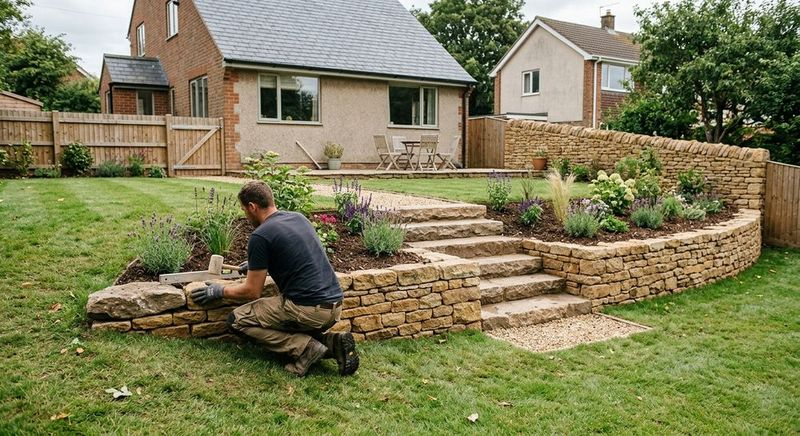
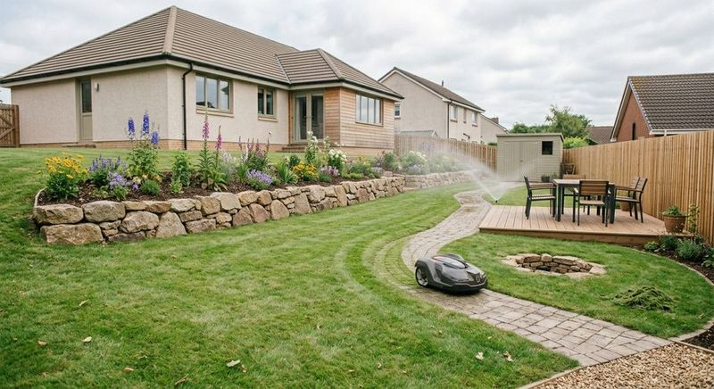

Élagage
Taille de réduction, d’éclaircie ou d’entretien pour des arbres sains et un jardin dégagé.
Élagage, abattage, dessouchage, haubanage, puis jardin et espaces verts : une équipe d’arboristes grimpeurs et de paysagistes, installée à Étampes depuis 2009.

Chaque intervention commence par un conseil, puis un chantier mené en sécurité et un suivi jusqu’au dernier copeau.
Taille de réduction, d’éclaircie ou d’entretien pour des arbres sains et un jardin dégagé.

Démontage pièce par pièce quand l’espace est compté, en sécurité pour vos abords.

Soutien des arbres fragiles et interventions techniques en hauteur.

Souche retirée, branches et copeaux pris en charge : le terrain est prêt pour la suite.

Installée à Étampes depuis 2009, Au Cœur de l’Arbre intervient pour les particuliers, les professionnels et les administrations territoriales de l’Essonne.
Au-delà des arbres, l’équipe crée et entretient vos espaces verts pour en faire un lieu où l’on a envie de rester.



Vous décrivez votre besoin, l’équipe vous conseille et établit un devis gratuit.
Le chantier se déroule dans les délais convenus, avec le respect du végétal en ligne de mire.
L’accompagnement continue après le chantier, pour que vos arbres et votre jardin restent en bonne santé.
Appelez Florent Breugnot et son équipe, ou écrivez-nous en quelques lignes.
Ligne fixe : 01 87 22 22 11